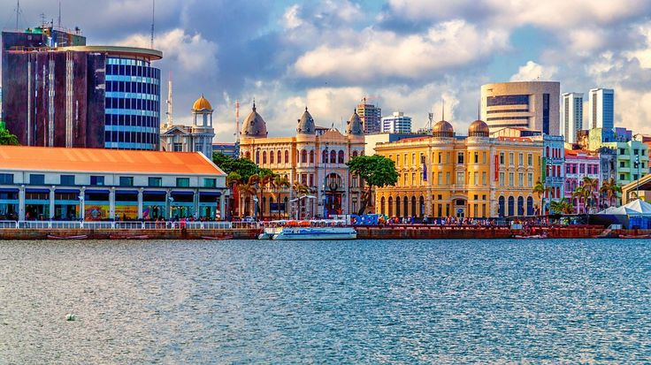
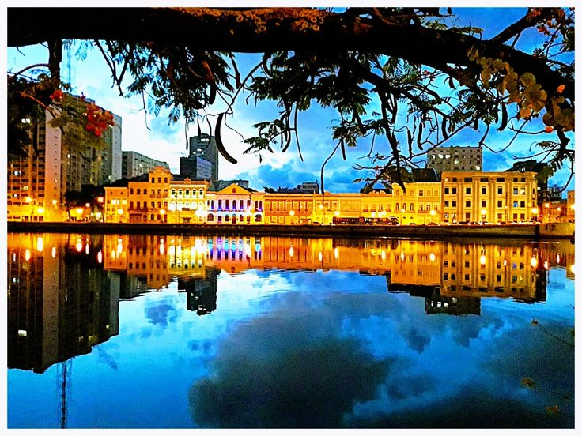
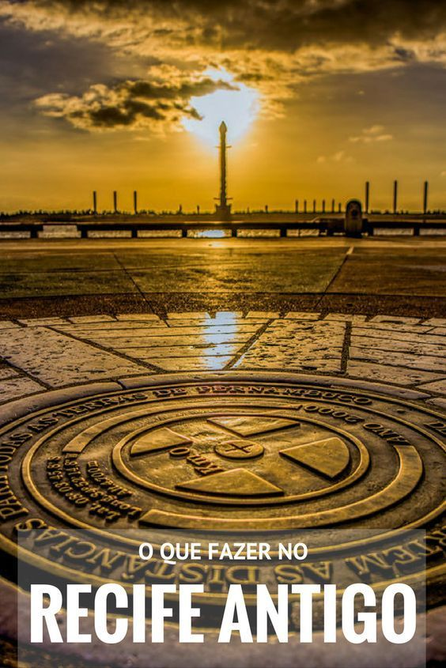

Esta imagem revela a orla do Marco Zero em todo o seu esplendor. Aqui, onde as águas calmamente beijam as margens, a história e a modernidade se encontram, criando um cenário urbano repleto de cultura, arte e uma vida noturna pulsante.
Imagem 2

À medida que o sol se põe, o céu acima do Marco Zero se transforma em um espetáculo de cores, com tonalidades de laranja, rosa e roxo refletindo sobre as águas tranquilas. Este momento mágico captura a harmonia perfeita entre natureza e urbanismo, destacando a beleza singular do Recife.
Imagem 3

A essência atemporal do Recife Antigo sob a luz dramática do amanhecer. O céu se ilumina em um espetáculo, prometendo um dia de exploração e descoberta. Da vibrante vida cultural às experiências gastronômicas únicas, cada passo é uma jornada através da história e da modernidade.